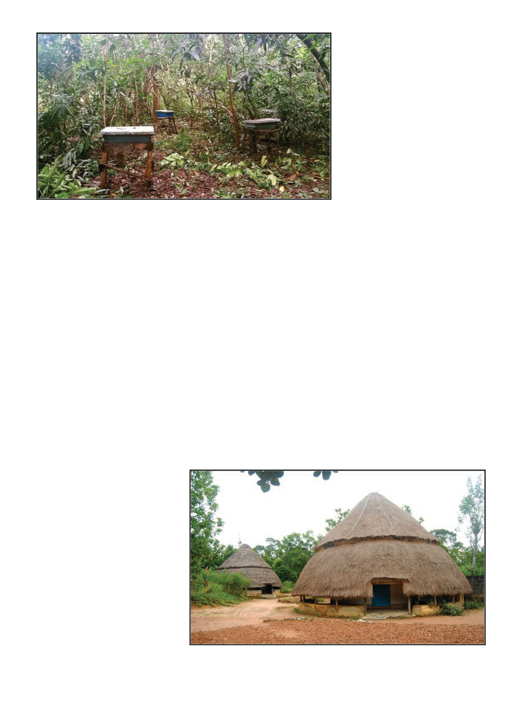

January 2020
103
I
n the Republic of Guinea in July
of 2014, there were an estimated
2,995 Kenyan topbar (KTB) hives,
165,625 traditional hives, 3,748 cases
of Ebola (some 500 still actually alive
at the time), and there was me trying
to stuff 2.8 million francs into a refrig-
erator. You may feel a bit confused
about this. I understand. In addition
to simple “Guinea,” there’s Guinea-
Bissau, Equatorial Guinea, Papua
New Guinea, as well as Guyana and
French Guyana. Guinea (sometimes
called Conakry Guinea, using the
capital city to distinguish it) is just
south of Guinea-Bissau on the West-
ern bulge of Africa.
Guinea uses the Guinean Franc, of
which at the time the largest note was
10,000 francs, equal to about $1.48.
The $414, meant for all the up-coun-
try expenses of a beekeeping project,
translated at that rate to several bricks
of bills. I felt like a druglord with these
blocks of currency, and my hotel room
had no safe. It did, however, have a
refrigerator with a lock built into the
door. The key was conveniently left in
it. So I found myself locking my hoard
of cold hard cash and laptop in the
fridge. This may have seemed a cool
solution, but an additional complica-
tion appeared when I took my laptop
out to use it and the crisply chilled
computer immediately started gath-
ering so much condensation from the
humidity in the room that I feared for
its safety, and thereafter unplugged
the fridge.
In 1953 Winthrop Rockefeller
founded the first model farm that
would eventually become what is
today the international agricultural
development organization Winrock
International. Winrock International
now implements 150 ongoing projects
in over 40 countries, including the
USAID farmer-to-farmer program,
which I am grateful to have the op-
portunity to participate in as a bee-
keeping volunteer. Winrock is based
in Little Rock, Arkansas, but has local
field staff in all the countries in which
they operate, and I have found all
their staff to be genuine and sincere
people with a passion for their work.
Winrock’s local partner for bee-
keeping projects in Guinea is the Fed-
eration des Apiculteurs de Guinée
(FAPI), which consists of a federation
of 25 unions of a total of 127 local
beekeeping groups and three related
artisan groups (woodworkers, met-
alsmiths, and tailors). In 2014 they
had 5,301 members (including 1,200
women). FAPI’s headquarters is in the
interior in the town of Labé, and all
three projects I would eventually do
in Guinea were in the vicinity of Labé.
“Our normal driver died yester-
day,” I was informed, so Winrock
Guinea had a new driver, Kamera,
take me out to the field. It took about
four hours of slogging through traf-
fic to get out of the capital, Conakry,
which is built on a long peninsula.
When it’s not raining in Conakry,
the sun simmers the many moulder-
ing puddles for rather fetid effect.
At one point a nearby car tipped so
far into a water-filled pot-hole it was
left with only two wheels in contact
with the pavement, as helpless as an
overturned beetle. Once one gets out
of the city the countryside is quite
nice though, hilly, and green, sparsely
populated with little clusters of huts
steaming in the sun. The bucolic land-
scape was punctuated with the occa-
sional bustling little town of decaying
old colonial buildings, and in each of
these as we got further into the in-
terior we saw fewer people in jeans,
more traditional garb, and eventually
the occasional woman in a full burqa.
Frequently we passed roadside stands
where plastic bottles of some red
looking liquid was being sold. I na-
ively asked what this popular drink
by Kris Fricke
Some of the beautiful huts very much in current use
Beekeeping
in Guinea
Beekeeping
in Guinea